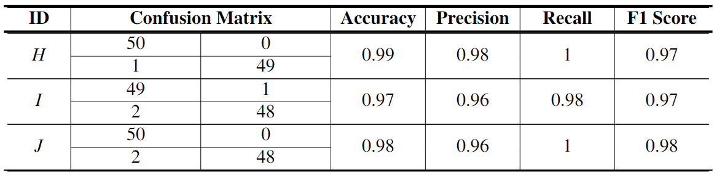
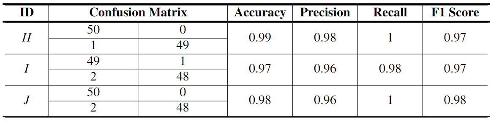

INTRODUCTION

Figure 1. The relationship between the complexity of
networking and deployment and the number of sensors or sensing purposes.
BACKGROUND
In traditional IoT scenarios, Specific-Purpose Sensor (SPS) or Distributed Multi-Sensor (DMS) are usually deployed directly on different locations or objects to sense diverse purposes, However, the number of sensing purposes always conflict with the complexity of networking and deployment. Integrated Multi-Sensor Tag (IMST) alleviates this problem, such as Texas Instruments SimpleLink SensorTag, and Laput's Synthetic Sensors, with multiple sensors integrated on a small board to indirectly monitor a large context, without direct instrumentation of objects. But due to the limited computing power of IMST, a large amount of raw data still needs to be sent to the remote server for processing through wireless technologies such as Bluetooth or WiFi, which may lead to processing delays, data leakage or intrusion.
MOTIVATION
With the rapid increase in computing power of end devices, many machine learning models are popular for inference on end devices. With the help of real-time data from sensors, the activities that are happening in the environment can be analyzed and recognized in real-time, which has a lot of demand and promise in the field of autonomous driving, sports, healthcare, etc.
METHOD

Figure 2. System Architecture of ECSK.
In this work, we explore the concept of Edge Computing Sensor Kit (ECSK) based on the former work. We designed a new type of hardware that integrates several different types of sensors, including a camera and a microphone, on a small board, while adding a powerful processor and Tensor Processing Unit, which allows algorithmic models and applications to run directly on it instead of on a remote server. Each sensor has a task channel, and multiple sensors can independently perform data sampling and feature extraction with concurrency. Feature data from different sensor channels are used to achieve real-time recognition of general activities in the environment (e.g., robotic arm movement) by a machine learning based multi-sensor information fusion algorithm.

Figure 3. Concurrent multiple activity recognition in a single scene.
RESULT
After completing the model training, we deployed our system in six real scenarios, and the deployment location of ECSK. In each scenario, ECSK continued the identification for each real-time activity, and we kept 50 positive and negative examples for each activity to ensure a balanced sample. We counted the confusion matrix, accuracy, precision, recall and F1 score for the 27 activities in scenarios, and finally the F1 score was used as the reference metric. We rounded all the values.


Figure 4. Six different evaluation scenarios.
Based on the results, it can be seen that for each activity the F1 scores for recognition are above 80%, mostly above 95%, with an average value of 94%. A few activities have lower F1 scores (e.g., activity F in the CNN machine scenario has a final F1 score of only 82%) due to the fact that the activity triggers only a small number of sensors and too little sensor information thus leading to poor recognition results. For such an activity, we can improve the results by adding more sensors or modifying the deployment location, which may be done in our next phase of work.
Figure 5. 27 activities in 6 scenarios and the corresponding signal channel weights.
After deploying ECSK in many types of scenarios (e.g. industrial scenarios), the results show that the complexity of networking and deployment is reduced compared to SPS and DMS, and operators only need to power on the ECSK to make it work without any other additional operations, and the accuracy and robustness of real-time activity recognition are improved due to effective multi-sensor information fusion algorithm. In addition, compared to IMST, the transmission of large amounts of raw data between it and the remote servers is no longer required, which improves system responsiveness and reduces the risk of data compromise and intrusion. Further, the user experience is enhanced by the combination of ECSK with data visualization and digital twin technology.
ECSK can sense, process, and recognize the general activities happening in the environment in real-time like a human, which will have a positive impact on the future IoT, Industry 4.0, Autonomous Driving, Health Care, and other related fields.
KEYWORDS
Edge Computing Sensor Kit, Information Fusion, Machine Learning, Real-time Activity Recognition, Digital Twin, Data Visualization.
MATERIALS
HARDWARE

Figure 6. Schematic of our sensor board and the layout of the sensors and other modules.
To facilitate the deployment of our Edge Computing Sensor Kit, we designed it to be as small as possible without compromising its performance. In the end, the size of our board was kept to 40 mm wide and 55 mm long, which is smaller than a bank card.
Figure 7. Photo of Edge Computing Sensor Kit.
DIGITAL TWIN
A digital twin is a virtual model that is designed to accurately reflect a physical object. For example, a wind turbine is equipped with various sensors related to important functional areas that generate data about different aspects of the physical object’s performance, such as energy output, temperature, weather conditions, etc. This data is then forwarded to a processing system and applied to a digital copy.
Figure 8. Industrial machine tools in the virtual world.
EVALUATION
 



Table 1-6. Model evaluation results in 6 scenarios.
EXPERIMENT
In traditional IoT scenarios, Specific-Purpose Sensor (SPS) or Distributed Multi-Sensor (DMS) are usually deployed directly on different locations or objects to sense diverse purposes.
Video 1. Someone famous in Source Title.
Video 2. Someone famous in Source Title.